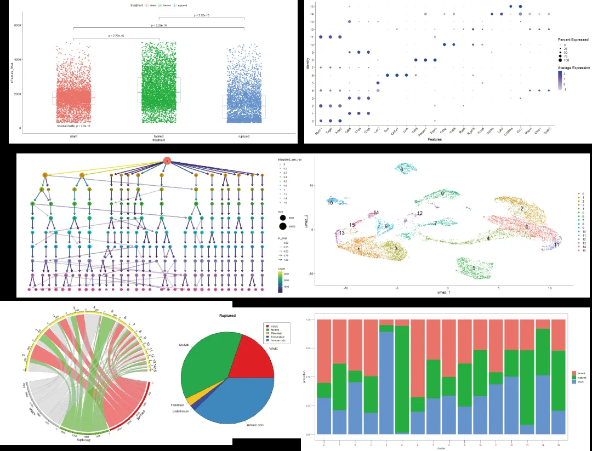
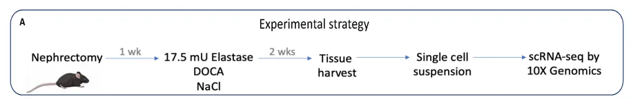
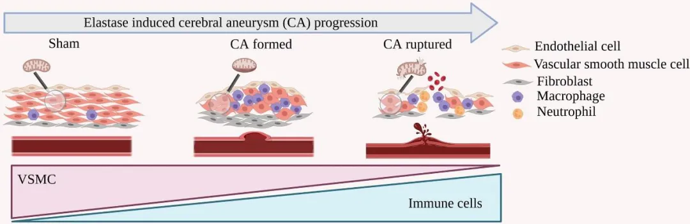

代码复写| 小鼠脑动脉瘤模型的scRNA-Seq分析
原文：https://mp.weixin.qq.com/s?__biz=MzAwMzIzOTk5OQ==&mid=2247507717&idx=2&sn=1d99c171cbfedc11f11fc827b643c89d&chksm=9b3ca655ac4b2f4360790bde80bc1452e9e314c6a0ae2dc6f9d19edbcc580e81ace3080dbb5f#rd 合集：单细胞教程全收录 / 全文复现
评审环节开始！
** 写在前面**
首届“寻因杯”单细胞代码复写大赛正在展开评审环节，这次带来的是18号作品。本作品复写了题为"文章标题: Single-Cell Transcriptome Analysis of the Circle of Willis in a Mouse Cerebral Aneurysm Model"的论文.文章链接 ：https://www.ahajournals.org/doi/10.1161/STROKEAHA.122.038776数据原始链接： https://www.ncbi.nlm.nih.gov/geo/query/acc.cgi?acc=GSE193533复现图片集锦 ：

文献简介 ：发表日期和杂志：2022 年发表在STROKE上研究对象：成年雄性小鼠研究问题：确定Circle of Willis（CoW）血管细胞与脑动脉瘤（CAs）相关的转录特征。研究方法：使用单细胞RNA 测序技术对健康小鼠和脑动脉瘤（CAs ）小鼠的CoW 血管细胞进行了全面的谱系异质性和转录组学改变分析。实验设计：对照组：采用假手术的方式处理成年雄性小鼠。实验组：使用弹性蛋白酶模型在成年雄性小鼠中诱导脑动脉瘤。然后对动脉瘤诱导后 14 天获得的 Willis 样本进行单细胞 RNA 测序。


对来自假手术组、形成脑动脉瘤的动物以及患有破裂动脉瘤的动物所采集的Willis环动脉的单细胞悬浮液进行了单细胞RNA 测序。
一、复写内容